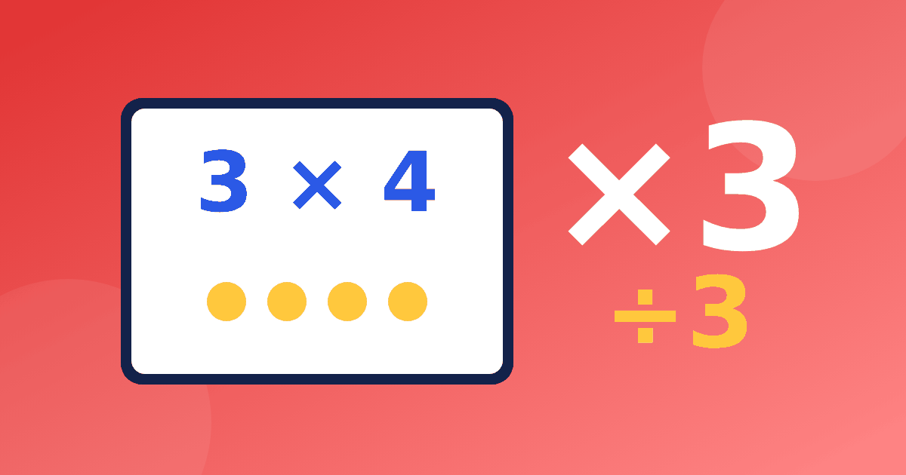

Как тренировать тройку: умножение и деление на 3

Тройка — столбик, на котором многие впервые чувствуют, что таблица умножения на 3 уже не «в одно движение». Здесь нужно и умножать, и делить, и не путать 21 с 24. Ниже — упражнения, из которых можно собрать свой маленький тренажёр дома, и осторожное объяснение, как пользоваться признаком делимости на 3.
Что должно быть в голове после тройки
Столбик: 3, 6, 9, 12, 15, 18, 21, 24, 27, 30. Но запоминание ряда — только половина. Полноценная таблица умножения и деления на 3 означает, что ребёнок видит ответ в двух направлениях: 3 × 7 = 21 и 21 ÷ 3 = 7. Если вы только начинаете, сначала загляните в статью про таблицу на 2 и 3.
Упражнения для умножения
- Счёт тройками вслух до 30 и обратно: 30, 27, 24 и так далее. Обратный счёт полезнее, чем кажется.
- Пропущенные числа: 3, 6, __, 12, __, 18. Ребёнок вписывает 9 и 15.
- «Верно ли?»: 3 × 7 = 24? Нет, 21. Находить ошибку интереснее, чем отвечать.
- Двойка плюс один: 3 × 6 = 2 × 6 + 6 = 12 + 6 = 18. Приём пригодится, если ответ забыт.
- Самые коварные пары — 3 × 7 и 3 × 8, 3 × 6 и 3 × 9. Отметьте их цветом и тренируйте отдельно.
Деление на 3 через умножение
Спросите: «Сколько раз по 3 помещается в 18?» Ребёнок идёт по столбику: 3, 6, 9, 12, 15, 18 — шесть шагов, значит 18 ÷ 3 = 6. Потом переходит к вопросу «3 умножить на сколько даст 18?». Тот же приём, обратный к умножению, описан в статье про деление как обратное умножение.
Хорошее упражнение — «семейка равенств»: даны 3, 8 и 24, нужно записать четыре равенства. 3 × 8 = 24, 8 × 3 = 24, 24 ÷ 3 = 8, 24 ÷ 8 = 3.
Признак делимости на 3 — аккуратно
Есть красивый способ проверить, делится ли число на 3. Сложите его цифры: если сумма делится на 3, то и число делится на 3. Например, у числа 27 сумма цифр 2 + 7 = 9, значит 27 делится на 3 (27 ÷ 3 = 9). У числа 51 сумма цифр 5 + 1 = 6, значит 51 ÷ 3 = 17. А у числа 52 сумма цифр 5 + 2 = 7, на 3 не делится.
Заметьте, как это согласуется со столбиком. Суммы цифр у ответов 12, 15, 18, 21, 24, 27, 30 такие: 3, 6, 9, 3, 6, 9, 3. Все они кратны трём. Ребёнок может увидеть закономерность сам.
Несколько оговорок. Признак не заменяет таблицу: он нужен для проверки и для чисел побольше. Доказывать его в начальной школе не нужно, достаточно уметь применять и знать, что он работает для любых натуральных чисел. Не давайте его раньше, чем ребёнок понял смысл деления, иначе правило превратится в заклинание.
Мини-тренажёр на бумаге
Разделите лист на три колонки и заполните их вместе с ребёнком. В первой колонке 10 примеров на умножение (3 × 4, 3 × 9, 3 × 6 и так далее), во второй 10 примеров на деление (15 ÷ 3, 27 ÷ 3, 18 ÷ 3), в третьей пять «пропусков» вида 3 × __ = 21. Каждый день обновляйте только часть примеров, остальные оставляйте для повтора. Такой бумажный вариант, то есть таблица умножения на 3 тренажер для дома, работает и без экрана.
Хороший ориентир — три уровня. Сначала ребёнок отвечает с опорой на счёт тройками. Потом отвечает сам, но с паузой. И только затем отвечает сразу. Переходить на следующий уровень стоит, когда предыдущий не вызывает напряжения. Если на каком-то примере всё же заминка, вернитесь к нему через день, а не в тот же вечер.
Типичные ошибки на тройке
- Путают 3 × 7 = 21 и 3 × 8 = 24. Помогает опора 3 × 8 = 2 × 8 + 8.
- Складывают вместо умножения: 3 × 6 = 9. Спросите, сколько в трёх группах по 6.
- В делении называют множитель вместо ответа: 21 ÷ 3 = 3. Проверка умножением сразу покажет ошибку: 3 × 3 = 9, а не 21.
Для ребёнка таблица умножения и деления на 3 — единое целое, поэтому занятие закрепляет и столбик, и смысл деления. Чередуйте примеры: один на умножение, следующий на деление с теми же числами. Например, 3 × 6 = 18, а затем 18 ÷ 3 = 6.
Как выстроить занятие
За 7–10 минут можно успеть: счёт тройками, пять примеров на умножение, пять на деление, одно задание «верно ли?». Закончите самым лёгким, чтобы ребёнок ушёл довольным. Для спокойной работы подойдёт и онлайн-формат: таблица умножения на 3 тренажёр в нашем сервисе показывает группы картинками, занятия короткие, таймера и рейтингов нет, регистрация не нужна.
Не переходите на четвёрку, пока тройка и деление на неё не стали уверенными. Дальше вас ждёт столбик на 4, где опора на двойку работает ещё сильнее.